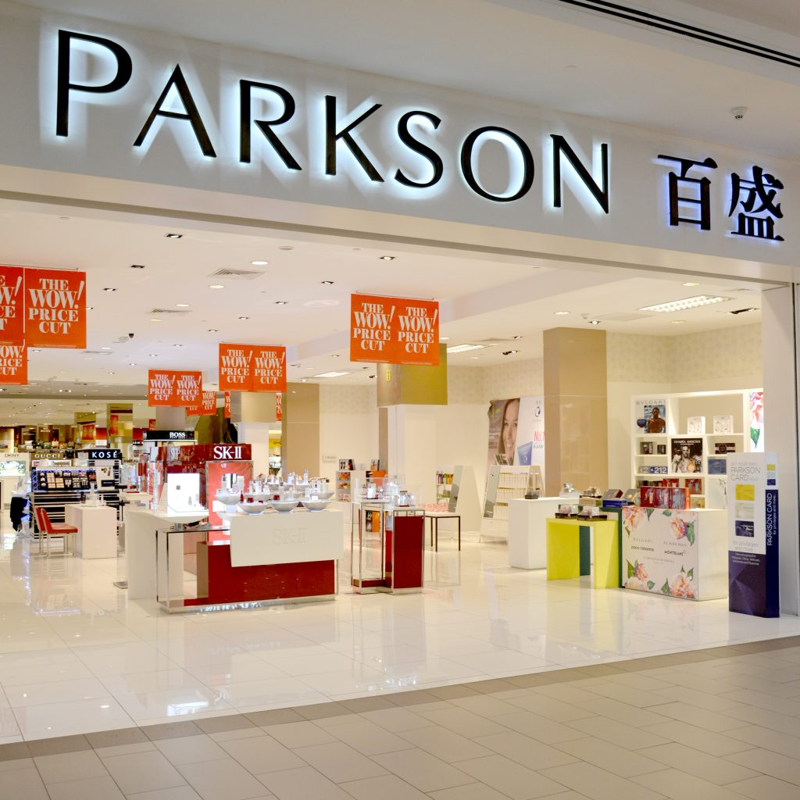
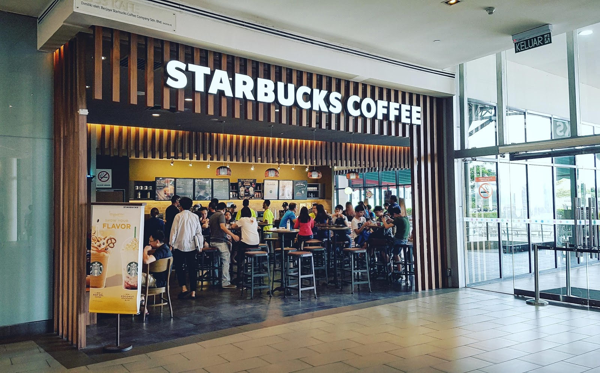

MY EXPERIENCE
|  | My first work experience was in 2017 until 2018. I was working at Parkson Corporation Sdn Bhd, Setia City Mall, Selangor. I was working as a promoter/sales assistant. I work in the women's department namely; brand of children's and women's shoes in ABC footwear Sdn. Bhd. This work experience is very challenging because to have to be independent and can't always expect others. It also teaches to be brave, patient and strong -willed. Since the customers there are so diverse, it was very difficult for me to satisfy and answer their questions but it was fun. Most importantly, I learn many things when I work at this place such as teamwork, and how to handle a lot of customers. It has been a wonderful experience.
|
|
|  | My second place of work is at Starbucks in Setia City Mall. I work as a barista in this store because I have no experience in food preparation services or Food and Beverages Services. I have had experience in the Retail industry since I used to work at my first job which was Parkson. Each has its own advantages and challenges I use all of my experiences that I learned from my first work experience. As a barista at Starbucks, I will be expected to adapt to the changing needs throughout the store rapidly because I can easily start off making beverages at the Frappuccino station before swapping spots with a fellow associate at the espresso bar. For example, as a Starbucks barista, my primary responsibilities will include preparing coffee and tea beverages for customers and more. Next, these stores are more comfortable to work in because their environment is cooler and there are more customers. But weekends are peak days for this store as people come. The variety of sweet and bitter memories available at Starbucks Setia City Mall that made me more mature to face the challenges of life ahead.
|
|